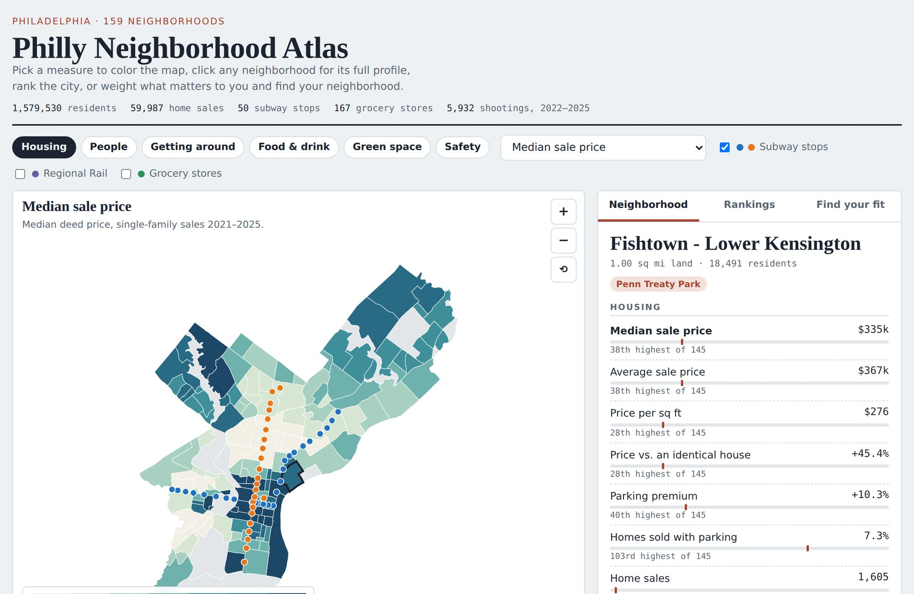

Projects

An interactive map of Philadelphia's 159 neighborhoods. Click a neighborhood to see its home prices, a hedonic estimate of what a parking spot adds to a home's value, Census demographics, park coverage, subway access, grocery stores and restaurants per capita, and shootings, each with its citywide rank. Visitors can also rank neighborhoods by any measure or weight the measures to find their best fit. Built from city property and deed records, the American Community Survey, crime data from the Philadelphia City Controller, and OpenStreetMap.